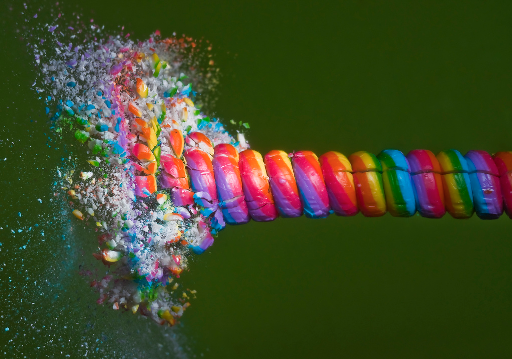
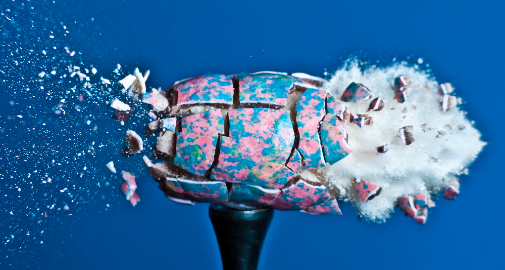
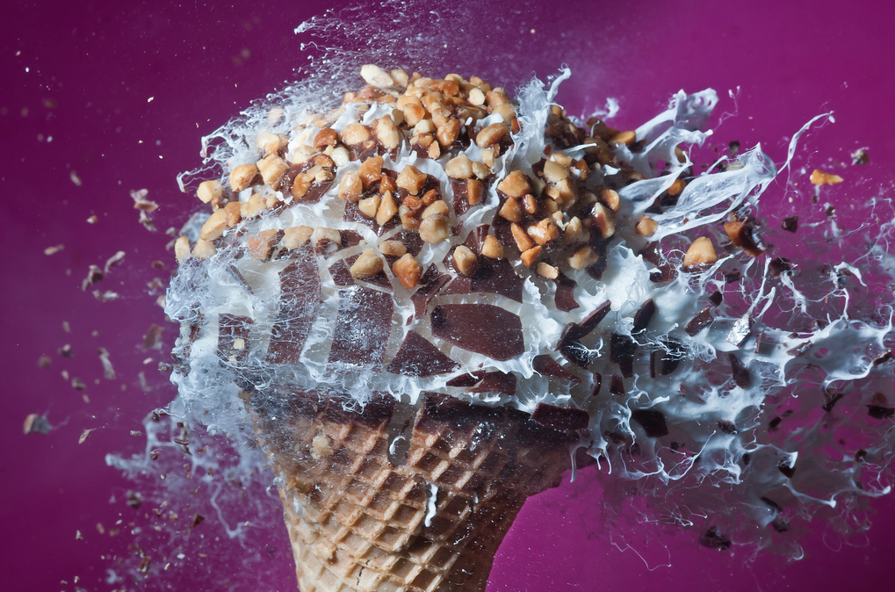
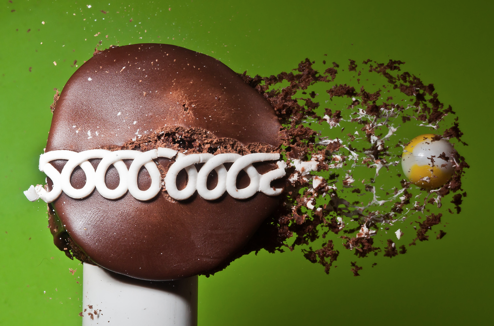
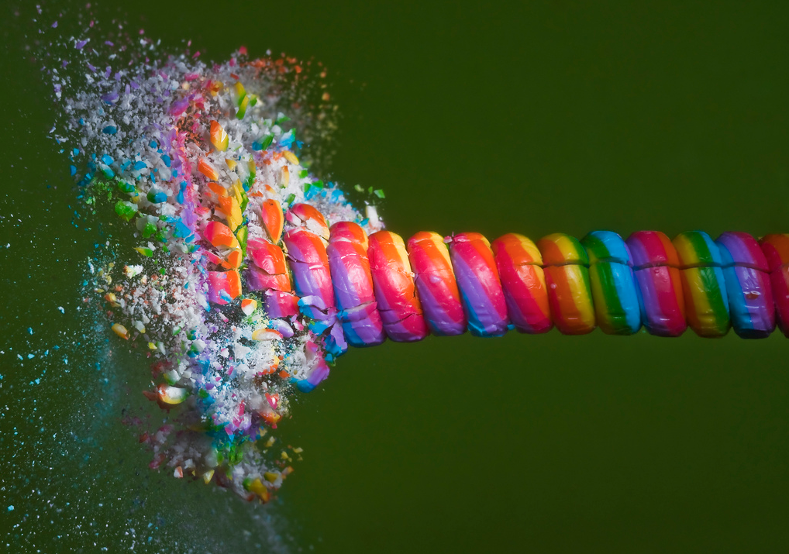
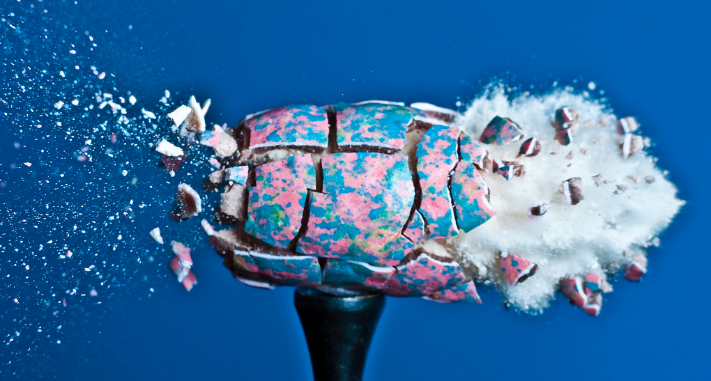
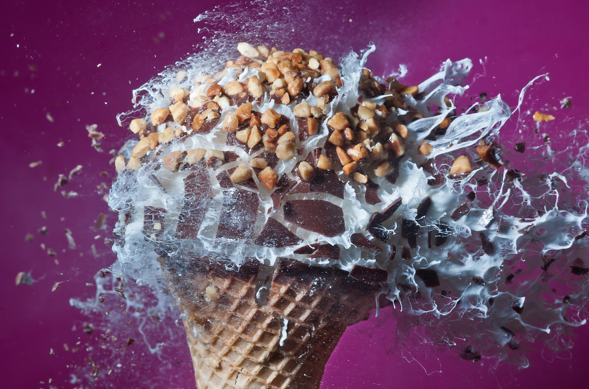
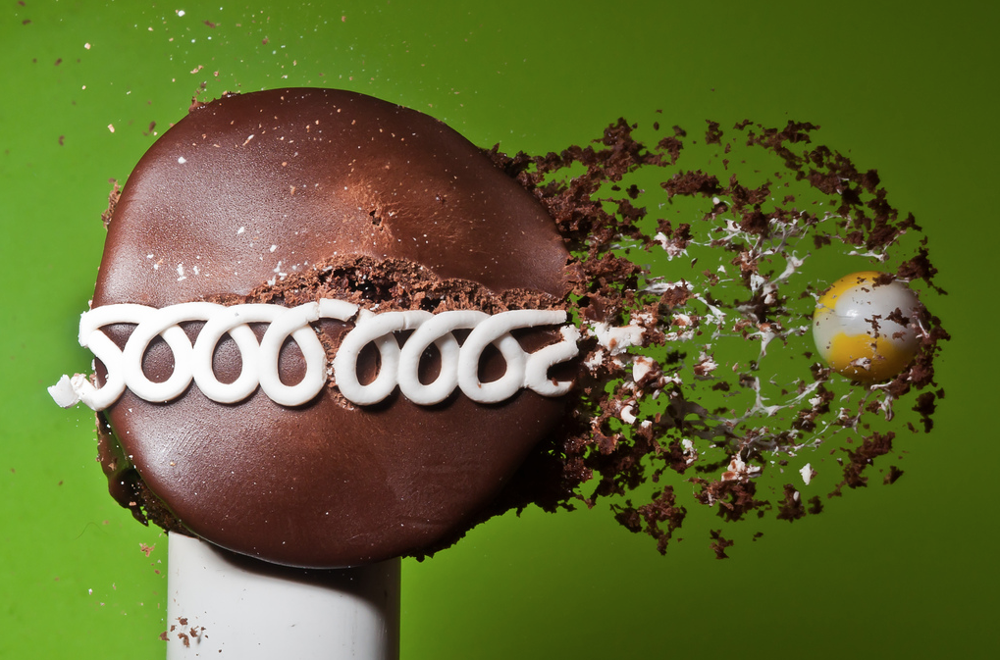

Exploding Sugar
Armed with a pellet rifle, homemade flash and camera photographer Alan Sailer captures exploding objects from sugary treats to troll dolls. Check out his massive collection of explosions on Flickr.




Armed with a pellet rifle, homemade flash and camera photographer Alan Sailer captures exploding objects from sugary treats to troll dolls. Check out his massive collection of explosions on Flickr.